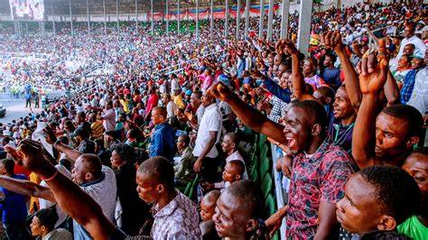
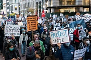
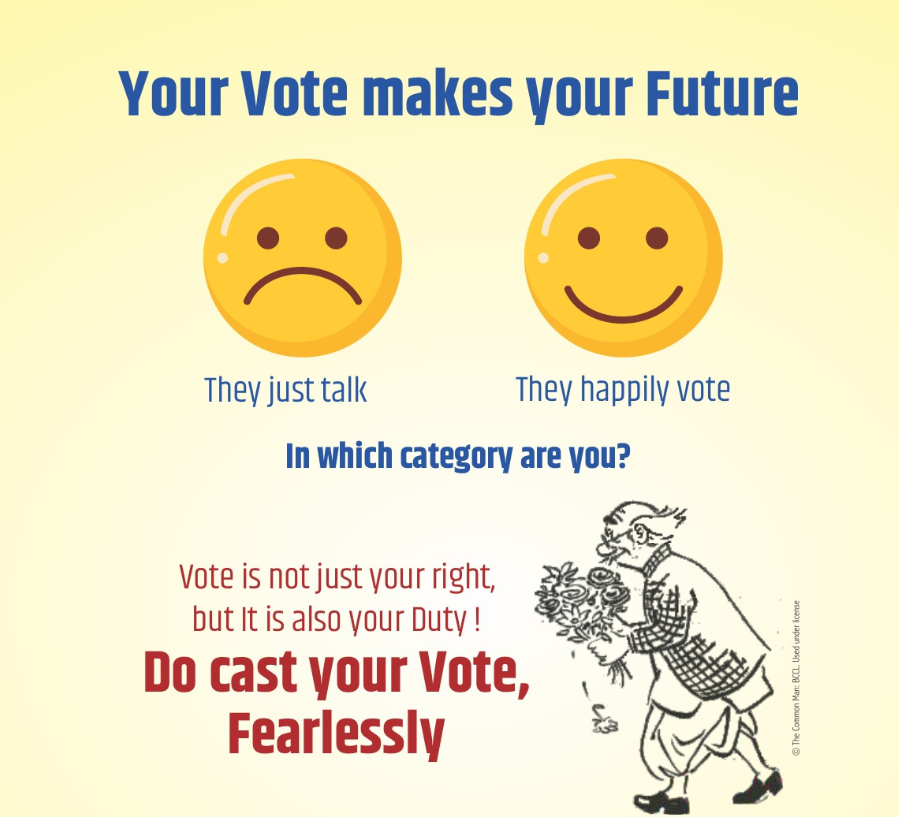
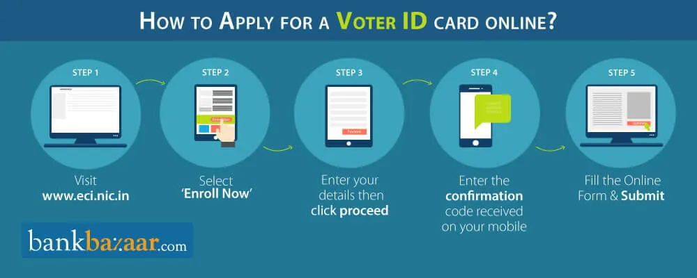

Foregin Electoral Carnivels
2020 presidential election: Approximately 66.4% of eligible voters cast their ballots, which is the highest turnout in a presidential election since 1900. 2018 midterm election: Approximately 50.3% of eligible voters cast their ballots, which is the highest turnout for a midterm election since 1914. 2016 presidential election: Approximately 60.2% of eligible voters cast their ballots. 2014 midterm election: Approximately 36.4% of eligible voters cast their ballots. It's worth noting that voter turnout can also vary significantly by state, with some states consistently reporting higher turnout than others. Additionally, there are efforts underway in the United States to make voting more accessible and increase voter turnout, such as expanding early voting, implementing automatic voter registration, and making voting by mail more widely available.
 Know Your Rights
Importance Of Voting
It has been customary to speak vehemently about any candidate or elected leader of any legislative assembly or parliament. The fault-finding then shifts to the 'System,' and how democracy is failing to function properly. However, 'What the people can do' to deepen democratic roots and bring about systemic change has received relatively little attention. It is the obligation of the chosen leader to satisfy the wishes of the voters, just as it is the responsibility of the Indian people to contribute to the selection of the best leader for their representation. People have been given a powerful right by democracy: the right to vote. Voting is the cornerstone of democracy's slogan, "Of the people, for the people, and by the people." As a result, rather than viewing it as a vacation, one must vote if one actually wants to participate in the nation-building process and effect change. A citizen should not have to look for a reason to vote. Although there is no legal obligation to vote, it must be done as a compulsion.
Process Of Voting
The election commission of India offers online voter registration for Indian citizens who have attained the age of 18 on the qualifying date (1st of January of the year of revision of the electoral roll). Citizens, can enroll himself/herself as General Voters and fill out Form 6 online at National Voters' Service Portal. Registered voters should also check their enrollment status.
Contribute Creativity To Government
Our Government has brought up an initiative to increase voter turnout through the creativity of young citizens .To contribute your ideas like posters, jingles, inspiring videos, etc, upload your ideas below to donate your ideas and be the part of the worlds biggest electoral festival